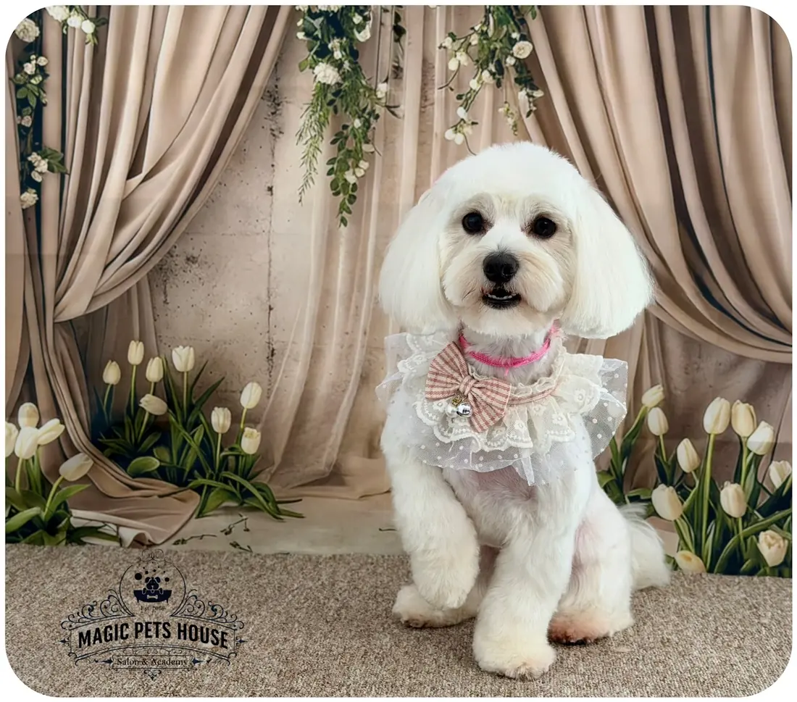

{{PREZENTARE PACHECO STUDIOS · site demonstrativ pentru Magic Pets House|PACHECO STUDIOS PREVIEW · demo website for Magic Pets House|APRESENTAÇÃO PACHECO STUDIOS · site de demonstração para a Magic Pets House}}
Magic Pets House · {{salon de toaletaj și academie|grooming salon and academy|salão de tosquia e academia}}
{{Vine ciufulit. Pleacă gata de poză.|Comes in scruffy. Leaves picture-ready.|Chega despenteado. Sai pronto para a foto.}}
{{ciufulit|scruffy|despenteado}}

BichonMagic Pets House
{{Alege rasa, apoi bagheta. Poza e din salon.|Pick a breed, then the wand. The photo is from the salon.|Escolha a raça, depois a varinha. A foto é do salão.}}
{{Baie, tuns și aranjat pe Strada Nicoriță, lângă Tătărași — și, la final, poza în decorul de studio. Unii clienți vin de peste patru ani.|Bath, clip and styling on Strada Nicoriță, next to Tătărași — and, to finish, a photo on the studio set. Some clients have been coming for over four years.|Banho, tosquia e arranjo na Strada Nicoriță, junto a Tătărași — e, no fim, a fotografia no cenário de estúdio. Há clientes que vêm há mais de quatro anos.}}
{{După tuns, poza în decor.|After the cut, a photo on set.|Depois da tosquia, a foto no cenário.}}
{{Fiecare cățel e fotografiat în colțul cu draperii, lalele și covor pufos. Decorul se schimbă după anotimp.|Every dog is photographed in the corner with drapes, tulips and a fluffy rug. The set changes with the season.|Cada cão é fotografado no canto das cortinas, túlipas e tapete fofo. O cenário muda com a estação.}}
{{Primăvara|Spring|Primavera}}{{Draperii bej, iederă și lalele albe.|Beige drapes, ivy and white tulips.|Cortinas bege, hera e túlipas brancas.}}
{{Iarna|Winter|Inverno}}{{Zăpadă, globuri roșii și un felinar de Crăciun.|Snow, red baubles and a Christmas lantern.|Neve, bolas vermelhas e uma lanterna de Natal.}}
{{Totul începe în cada de lemn.|It all starts in the wooden tub.|Tudo começa na banheira de madeira.}}
{{Înainte de foarfecă: duș, șampon și clătit pe îndelete în cada de lemn, cu peretele de cărămidă în spate. Apoi uscat, periat și abia apoi tuns.|Before the scissors: shower, shampoo and an unhurried rinse in the wooden tub against the brick wall. Then drying, brushing, and only then the cut.|Antes da tesoura: chuveiro, champô e um enxaguar sem pressa na banheira de madeira, contra a parede de tijolo. Depois secar, escovar e só então tosquiar.}}
{{din 200 de recenzii · 168 au cinci stele|from 200 reviews · 168 are five stars|em 200 avaliações · 168 com cinco estrelas}}
5168
415
34
21
112
{{Ce spun stăpânii|What owners say|O que dizem os donos}}
{{Clienți care se întorc de ani buni.|Clients who keep coming back.|Clientes que voltam há anos.}}
4+{{ani|years|anos}}
{{Fidelitate|Loyalty|Fidelidade}}
{{Un stăpân povestește că vine cu cățelușa lui de mai bine de patru ani și că pleacă mulțumită de fiecare dată.|One owner says he has been bringing his little dog for over four years, and she leaves happy every time.|Um dono conta que traz a cadela há mais de quatro anos e que ela sai contente de todas as vezes.}}
3{{ani|years|anos}}
{{Și pentru un chihuahua|For a chihuahua too|Também para um chihuahua}}
{{Stăpâna unui chihuahua vine de trei ani și laudă profesionalismul și promptitudinea.|A chihuahua owner has been coming for three years and praises the professionalism and promptness.|A dona de um chihuahua vem há três anos e elogia o profissionalismo e a pontualidade.}}
{{Alții povestesc despre un cățel răsfățat care a plecat transformat, cu poze înainte și după, și despre o echipă care iubește animalele.|Others describe a pampered dog who left transformed, with before-and-after photos, and a team that loves animals.|Outros falam de um cão mimado que saiu transformado, com fotos de antes e depois, e de uma equipa que gosta de animais.}}
Magic Pets Academy
{{Vrei să înveți meseria? Există și școală.|Want to learn the trade? There’s a school too.|Quer aprender o ofício? Também há escola.}}
{{Pe lângă salon, Magic Pets House are și o academie de toaletaj canin. Află durata, prețul și când începe următoarea grupă.|Besides the salon, Magic Pets House runs a dog grooming academy. Find out the length, the price and when the next group starts.|Além do salão, a Magic Pets House tem uma academia de tosquia canina. Saiba a duração, o preço e quando começa o próximo grupo.}}
{{Curs de toaletaj canin|Dog grooming course|Curso de tosquia canina}}
{{Durată|Length|Duração}}
{{de confirmat|to be confirmed|a confirmar}}
{{Preț|Price|Preço}}
{{de confirmat|to be confirmed|a confirmar}}
{{Următoarea grupă|Next group|Próximo grupo}}
{{de confirmat|to be confirmed|a confirmar}}
{{Unde|Where|Onde}}
{{de confirmat|to be confirmed|a confirmar}}
{{Rândul lui la magie.|Their turn for some magic.|A vez dele para a magia.}}
{{Spune-ne rasa, talia și ce vrei; mesajul se scrie singur și pleacă pe WhatsApp sau prin SMS. Sau sună.|Tell us breed, size and what you want; the message writes itself and goes out on WhatsApp or by SMS. Or call.|Diga-nos a raça, o porte e o que quer; a mensagem escreve-se sozinha e segue por WhatsApp ou SMS. Ou ligue.}}
{{Programare la salon|Salon booking|Marcação no salão}} · WhatsApp · SMS
{{Cine vine la magie?|Who’s coming for some magic?|Quem vem para a magia?}}
{{Patru alegeri și numele tău. Mesajul se scrie singur alături; îl trimiți pe WhatsApp sau prin SMS, iar salonul îți confirmă ora.|Four choices and your name. The message writes itself alongside; send it on WhatsApp or by SMS and the salon confirms the time.|Quatro escolhas e o seu nome. A mensagem escreve-se sozinha ao lado; envie por WhatsApp ou SMS e o salão confirma a hora.}}
Magic Pets Academy
{{Învață toaletajul în salonul în care se face.|Learn grooming in the salon where it’s done.|Aprenda tosquia no salão onde ela se faz.}}
{{Academia e jumătatea a doua din Magic Pets House – Salon & Academy. Detaliile fiecărei grupe le afli direct de la academie — scrie-ne și îți răspundem.|The academy is the other half of Magic Pets House – Salon & Academy. Each group’s details come straight from the academy — write and we’ll reply.|A academia é a outra metade da Magic Pets House – Salon & Academy. Os pormenores de cada grupo vêm diretamente da academia — escreva e respondemos.}}
{{Durată|Length|Duração}}
{{de confirmat|to be confirmed|a confirmar}}
{{Preț|Price|Preço}}
{{de confirmat|to be confirmed|a confirmar}}
{{Următoarea grupă|Next group|Próximo grupo}}
{{de confirmat|to be confirmed|a confirmar}}
{{Certificat|Certificate|Certificado}}
{{de confirmat|to be confirmed|a confirmar}}
{{Ce vezi în salon, zi de zi|What you see in the salon, day to day|O que se vê no salão, dia a dia}}
{{Baia și uscatul|Bath and drying|Banho e secagem}}{{Cum se spală și se usucă un câine fără să se sperie.|How to wash and dry a dog without frightening it.|Como lavar e secar um cão sem o assustar.}}
{{Tunsul pe rase|Breed cuts|Cortes por raça}}{{Bichon, Yorkshire, Schnauzer, Pudel, Pomeranian — cum arată fiecare după toaletaj.|Bichon, Yorkshire, Schnauzer, Poodle, Pomeranian — how each one looks after grooming.|Bichon, Yorkshire, Schnauzer, Caniche, Pomerânia — como fica cada um depois da tosquia.}}
{{Poza de final|The final photo|A foto final}}{{Decorul de studio, unde fiecare cățel e fotografiat după toaletaj.|The studio set, where every dog is photographed after grooming.|O cenário de estúdio, onde cada cão é fotografado depois da tosquia.}}
{{Programa exactă a cursului: de confirmat cu academia.|Exact course syllabus: to be confirmed with the academy.|Programa exata do curso: a confirmar com a academia.}}
{{Portofoliu|Portfolio|Portefólio}}
{{Gata de poză, rasă cu rasă.|Picture-ready, breed by breed.|Prontos para a foto, raça a raça.}}
{{Clienți ai salonului, fotografiați după toaletaj în decorul de studio — sau afară, la prima plimbare.|Salon clients, photographed after grooming on the studio set — or outside, on their first walk.|Clientes do salão, fotografados depois da tosquia no cenário de estúdio — ou lá fora, no primeiro passeio.}}
{{Contact și program|Visit and hours|Contactos e horário}}
{{Strada Nicoriță 19, lângă Tătărași.|Strada Nicoriță 19, by Tătărași.|Strada Nicoriță 19, junto a Tătărași.}}
…
Strada Nicoriță 19700397 Iași Plus Code 5J62+2H Iași
{{Intrare accesibilă|Accessible entrance|Entrada acessível}}{{Intrarea e accesibilă pentru scaun cu rotile.|The entrance is wheelchair accessible.|A entrada é acessível a cadeiras de rodas.}}
{{Lucrăm cu programare — sună sau trimite un mesaj înainte să vii.|We work by appointment — call or message before you come.|Trabalhamos por marcação — ligue ou mande mensagem antes de vir.}}
{{Scrie salonului|Write to the salon|Escrever ao salão}}
{{Mesajul pornește cu „Bună ziua! Am o întrebare pentru Magic Pets House:”. Alege cum îl trimiți.|The message starts with “Bună ziua! Am o întrebare pentru Magic Pets House:”. Choose how to send it.|A mensagem começa com “Bună ziua! Am o întrebare pentru Magic Pets House:”. Escolha como a enviar.}}